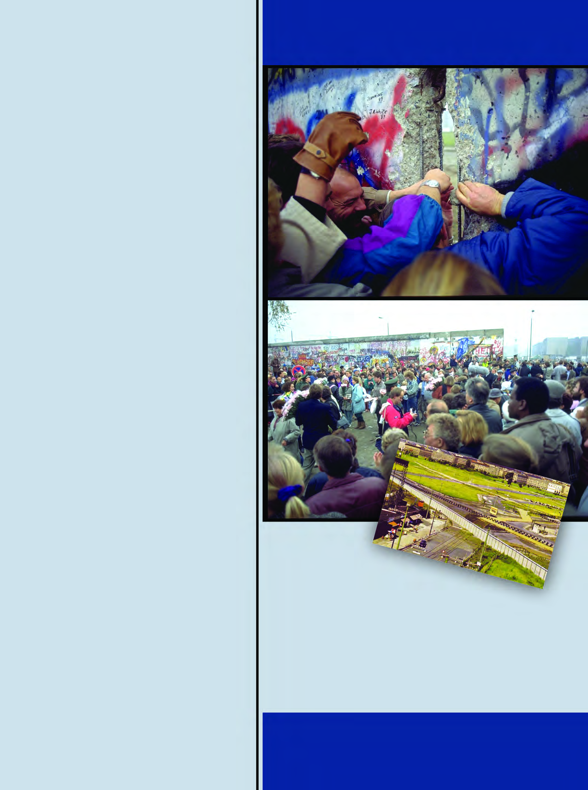
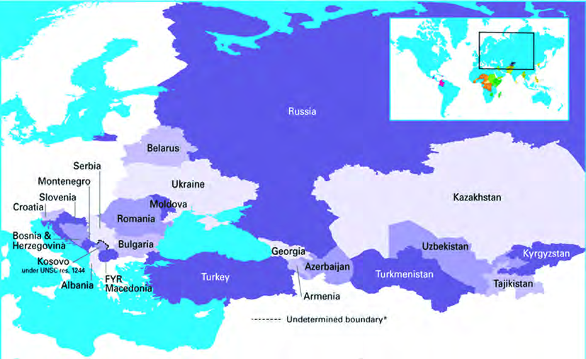
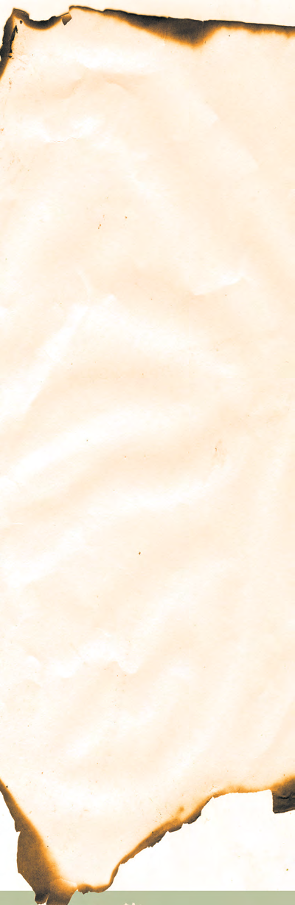

अध्याय 1: दो ध्रुवीयता का अंत
(The End of Bipolarity) - भाग 1: ऐतिहासिक पृष्ठभूमि
1. प्रस्तावना (Introduction) और ऐतिहासिक पृष्ठभूमि
प्रिय विद्यार्थियों, इतिहास में कभी-कभी कुछ घटनाएँ पूरी दुनिया का नक्शा और सोचने का तरीका दोनों बदल देती हैं। बीसवीं सदी का इतिहास ऐसी ही उथल-पुथल से भरा हुआ है। 1945 में द्वितीय विश्व युद्ध (Second World War) के बाद अंतर्राष्ट्रीय मंच पर एक गहरी दरार पैदा हो गई। दुनिया दो शक्तिशाली और वैचारिक रूप से विरोधी गुटों में बंट गई।
दो ध्रुवीयता (Bipolarity) क्या है?
- एक तरफ था संयुक्त राज्य अमेरिका (USA), जो पूंजीवाद (Capitalism) और उदारवादी लोकतंत्र (Liberal Democracy) का झंडा उठाए हुए था।
- दूसरी तरफ था सोवियत संघ (USSR - Union of Soviet Socialist Republics), जो समाजवाद (Socialism) और साम्यवाद (Communism) का प्रतीक था और समानता की वकालत करता था।
इन दोनों महाशक्तियों के बीच कोई सीधा युद्ध नहीं हुआ, लेकिन हथियारों, अंतरिक्ष और विचारधारा की जो भयानक होड़ शुरू हुई, उसे पूरी दुनिया 'शीत युद्ध' (Cold War) के नाम से जानती है। दुनिया के दो ही मुखिया होने की स्थिति को ही "दो ध्रुवीयता" (Bipolarity) कहा गया।
🛑 एक बड़ी दरार: बर्लिन की दीवार
शीत युद्ध का सबसे कुरूप और वास्तविक प्रतीक थी बर्लिन की दीवार (Berlin Wall)। 1961 में पूर्वी जर्मनी (सोवियत संघ के प्रभाव वाले) और पश्चिमी जर्मनी (अमेरिका के प्रभाव वाले) के बीच यह दीवार खड़ी की गई। यह 150 किलोमीटर लंबी दीवार लगभग 28 वर्षों तक पूंजीवादी और साम्यवादी दुनिया को बांटती रही।
2. ऐतिहासिक प्रतीक का पतन (The Fall of the Symbol)
बर्लिन की दीवार केवल ईंटों का ढांचा नहीं थी, यह एक विचारधारा का ज़ंजीर था जिसने लोगों की आज़ादी को बांध रखा था। जब 1980 के दशक के अंत में पूर्वी यूरोप में बदलाव की लहर दौड़ी, तो आम जनता की आकांक्षाओं का सैलाब उमड़ पड़ा।

चित्र विवरण: 9 नवंबर 1989 की वह ऐतिहासिक रात जब आम जनता ने अपने हाथों से बर्लिन की दीवार को ढहा दिया। यह केवल एक दीवार का गिरना नहीं था, बल्कि शीत युद्ध के अंत की औपचारिक शुरुआत थी और दुनिया के फिर से एक होने का संकेत था। यही वह पल था जब दूसरी दुनिया (साम्यवादी राष्ट्र) के पतन का पहला पत्थर रखा गया।
3. रूस की पृष्ठभूमि: बोल्शेविक क्रांति (1917)
सोवियत संघ के पतन को समझने से पहले हमें उसके निर्माण को समझना होगा। 1917 में रूस में एक भारी जनतांत्रिक क्रांति हुई जिसे बोल्शेविक समाजवादी क्रांति कहा जाता है। इसके नेता 'व्लादिमीर लेनिन' थे।
- यह क्रांति पूंजीवादी व्यवस्था (जहां प्राइवेट संपत्ति होती है) के खिलाफ एक बड़ा विद्रोह थी।
- इसका आदर्श एक 'समतामूलक समाज' (Egalitarian Society) की स्थापना करना था, जहां समाज में अमीरी-गरीबी का कोई भेदभाव न हो और सभी उत्पादन के साधनों (जमीन, कारखाने) पर राज्य (सरकार) का सीधा नियंत्रण हो।
- यही वह विचारधारा थी जिसने 'यूनियन ऑफ सोवियत सोशलिस्ट रिपब्लिक्स' (USSR) को जन्म दिया जो आगे चलकर 15 गणराज्यों का एक विशाल संगठन बना।

चित्र 1.1: 1989 में बर्लिन की दीवार को गिराते हुए आम नागरिक - यह 'शीत युद्ध' के अंत का प्रतीक था। (स्रोत: NCERT)
विशेष नोट्स: दो ध्रुवीयता का अंत (The End of Bipolarity)
1. ऐतिहासिक पृष्ठभूमि (Historical Background)
शीत युद्ध के दौरान पूरी दुनिया दो गुटों में बंट गई थी—एक तरफ अमेरिका (पूंजीवाद) और दूसरी तरफ सोवियत संघ (साम्यवाद)। इन दोनों के बीच 'बर्लिन की दीवार' न केवल जर्मनी को बांटती थी, बल्कि यह दुनिया के दो हिस्सों (पूर्वी और पश्चिमी) में बंटने का सबसे बड़ा प्रतीक थी।
क्रांति का जन्म: सोवियत प्रणाली की शुरुआत
सोवियत संघ (USSR) का जन्म 1917 की रूसी क्रांति के बाद हुआ था। यह क्रांति 'समाजवाद' के आदर्शों और एक 'समतामूलक' समाज की ज़रूरत से प्रेरित थी। इसका उद्देश्य पूंजीवाद को जड़ से खत्म करना और समाज में संसाधनों का बराबर बंटवारा करना था।
2. दूसरी दुनिया (The Second World) क्या थी?
द्वितीय विश्व युद्ध के बाद, पूर्वी यूरोप के वे देश जिन्हें सोवियत सेना ने फासीवादी ताकतों (हिटलर) से आजाद करवाया था, वे सोवियत संघ के प्रभाव में आ गए। इन देशों की राजनीतिक और आर्थिक व्यवस्था को सोवियत प्रणाली के तर्ज पर ढाला गया। इन्हीं देशों के समूह को 'दूसरी दुनिया' या 'समाजवादी खेमा' कहा गया।
महत्वपूर्ण घटनाक्रम:
- 1961: बर्लिन की दीवार खड़ी की गई (28 साल तक रही)।
- 1989: बर्लिन की दीवार को जनता ने गिराया (9 नवंबर)।
- 1990: जर्मनी का एकीकरण हुआ।
- 1991: सोवियत संघ का आधिकारिक पतन।
अगले भाग में हम सोवियत प्रणाली की उन विशेष ताकतों और कमजोरियों के बारे में पढ़ेंगे, जिन्होंने इसे एक समय अमेरिका से भी ज्यादा शक्तिशाली बना दिया था।
भाग 2: सोवियत प्रणाली (The Soviet System) और उसकी गहराई
समाजवाद का जन्म वास्तव में पूंजीवाद की बुराइयों के जवाब में हुआ था। सोवियत प्रणाली एक ऐसी राजनीतिक और आर्थिक व्यवस्था थी जिसका मुख्य उद्देश्य समाज में समानता लाना था। प्राइवेट कंपनियों और प्राइवेट मालिकों को इस प्रणाली में कोई जगह नहीं दी गई थी।
1. सोवियत प्रणाली की मुख्य विशेषताएं (Features of the System)
सोवियत संघ की शक्ति और विकास दर अमेरिका के बाद दूसरे नंबर पर थी। आइए समझते हैं ऐसा क्यों था:
- संपूर्ण राज्य नियंत्रण (State Control): हर चीज़—ज़मीन, बैंक, कारखाने, अस्पताल, और परिवहन—का मालिक सिर्फ राज्य (सरकार) था। कोई टाटा या अंबानी जैसी प्राइवेट कंपनी नहीं थी।
- जटिल संचार प्रणाली: द्वितीय विश्व युद्ध के बाद से ही सोवियत संघ के पास अत्यंत उन्नत संचार प्रणाली (Advanced Communication Systems) थी।
- विशाल ऊर्जा संसाधन: सोवियत संघ के भूभाग में तेल, लोहा, उर्वरक (Fertilizers), और इस्पात के अपार भंडार थे। यह अपने आप में ही सब कुछ पैदा कर सकता था।
- परिवहन व्यवस्था: देश का आवागमन का साधन और रेलवे अत्यंत विशाल था जो दूर-दराज़ के दुर्गम इलाकों तक फैला था।
- न्यूनतम जीवन-स्तर (Minimum Standard of Living): सरकार ने हर नागरिक के लिए न्यूनतम जीवन-स्तर सुनिश्चित किया था। स्वास्थ्य, शिक्षा, बच्चों की देखभाल, और परिवहन जैसी बुनियादी ज़रूरतें अत्यंत रियायती (Subsidy) दरों पर या फ्री उपलब्ध कराई जाती थीं।
- बेरोजगारी नहीं: वहां बेरोजगारी बिल्कुल भी नहीं थी क्योंकि हर कोई सरकार के लिए किसी न किसी रूप में काम करता था। पिन से लेकर कार तक सोवियत संघ में ही बनता था।
2. व्यवस्था की कमियां जो पतन का कारण बनीं (Flaws of the System)
कागज़ पर व्यवस्था बहुत अच्छी लगती थी, लेकिन व्यवहारिक रूप में इसमें गहरी बीमारियां घर कर चुकी थीं:
- नौकरशाही और तानाशाही (Bureaucratic & Authoritarian):
पूरी प्रणाली पर नौकरशाहों (अधिकारियों) का कड़ा नियंत्रण हो गया था। सरकार आम जनता के प्रति जवाबदेह (Accountable) नहीं रह गई थी। धीरे-धीरे इसने तानाशाह का रूप ले लिया।
(उदाहरण: नागरिक बिना सरकार की अनुमति के कुछ लिख या बोल नहीं सकते थे।) - लोकतंत्र और अभिव्यक्ति की आज़ादी का अभाव: लोगों को बोलने की आज़ादी (Freedom of Speech) नहीं थी। लोग अपनी असहमति केवल 'चुटकुले' (Jokes) और कार्टून के माध्यम से छिपाकर व्यक्त करते थे। सरकार के खिलाफ बोलना राजद्रोह माना जाता था।
- एक पार्टी का प्रभुत्व (One Party Dominance): सोवियत संघ में केवल एक पार्टी थी—कम्युनिस्ट पार्टी (Communist Party)। किसी अन्य राजनीतिक दल या विपक्ष को अनुमति नहीं थी। यह पार्टी किसी भी संस्थान या जनता के प्रति जवाबदेह नहीं थी।
- रूसी वर्चस्व (Russian Dominance): यूं तो सोवियत संघ 15 गणराज्यों (15 Republics) को मिलाकर बना था, लेकिन हर मामले में रूस (Russia) का ही दबदबा था। बाकी 14 गणराज्यों के लोगों को ऐसा महसूस होने लगा कि उन्हें दबाया जा रहा है और उनके अधिकारों की उपेक्षा हो रही है।
🛑 हथियारों की होड़ और अर्थव्यवस्था का विनाश
शीत युद्ध की पृष्ठभूमि में, सोवियत संघ अपनी अधिकांश कमाई हथियारों (Nuclear Weapons), अंतरिक्ष अनुसंधान (Space Race), और पूर्वी यूरोप के देशों को अपने नियंत्रण में रखने में खर्च कर रहा था।
परिणामस्वरूप, उनके पास बुनियादी उपभोक्ता वस्तुओं (Consumer Goods जैसे कपड़े, जूते, खाने का सामान) की भारी कमी हो गई। 1970 के दशक के अंतिम वर्षों में सोवियत अर्थव्यवस्था पूरी तरह से ठहर (Stagnate) गई।
भाग 2: सोवियत प्रणाली - मज़बूती और पतन की जड़ें
1. सोवियत प्रणाली की नींव: व्लादिमीर लेनिन (Vladimir Lenin)

व्लादिमीर लेनिन (1870-1924) ही थे जिन्होंने 1917 की 'बोल्शेविक रूसी क्रांति' का नेतृत्व किया था। वे आधुनिक समाजवाद के संस्थापक और सोवियत संघ के पहले महासचिव थे। उनके अनुसार, समाज में समानता ही एकमात्र रास्ता था और वे पूंजीवाद के घोर विरोधी थे। (NCERT Portrait)
2. सोवियत प्रणाली की प्रमुख विशेषताएं (Features)
- संपूर्ण राज्य नियंत्रण (State Ownership): ज़मीन, कारखाने, बैंक—सब कुछ सरकार (राज्य) का था। निजी संपत्ति का कोई अस्तित्व नहीं था।
- न्यूनतम जीवन स्तर: सरकार ने बुनियादी ज़रूरतें (शिक्षा, स्वास्थ्य, बाल-देखभाल) स़बसिडी (Subsidy) पर दी थीं।
- कोई बेरोज़गारी नहीं: हर नागरिक के पास रोज़गार था।
- शक्तिशाली अर्थव्यवस्था: द्वितीय विश्व युद्ध के बाद सोवियत संघ की अर्थव्यवस्था अमेरिका के बाद दूसरे नंबर पर थी। उनके पास अपार ऊर्जा संसाधन (तेल, लोहा, इस्पात) थे।
3. जोसेफ स्टालिन और सत्ता का विस्तार (Joseph Stalin)

जोसेफ स्टालिन (1879-1953) वह व्यक्ति थे जिन्होंने लेनिन के बाद सत्ता संभाली और सोवियत संघ को एक औद्योगिक और सैन्य महाशक्ति बनाया। उन्होंने खेती का 'सामूहिकीकरण' (Collectivization) किया। हालांकि उनके दौर को 'लोह आवरण' (Iron Curtain) और कड़े नियंत्रण का दौर भी कहा जाता है। (NCERT Portrait)
🛑 प्रणाली की बुराइयां जो पतन का कारण बनीं
इतनी मज़बूत व्यवस्था होने के बावजूद, सोवियत प्रणाली के अंदर ही अंदर कुछ बीमारियाँ पनप रही थीं:
- नौकरशाही का शिकंजा: व्यवस्था बहुत अधिक नौकरशाही प्रधान (Bureaucratic) हो गई थी, जिससे आम जनता का जीना मुश्किल हो गया था।
- लोकतंत्र का अभाव: लोगों को बोलने या विचार व्यक्त करने की आज़ादी नहीं थी।
- एक ही पार्टी का शासन: 70 सालों तक सिर्फ कम्युनिस्ट पार्टी का राज रहा और वह जनता के प्रति जवाबदेह नहीं थी।
- रूसी वर्चस्व: सोवियत संघ 15 गणराज्यों से बना था, लेकिन हर मामले में 'रूस' ही दबदबा रखता था जिससे बाकी गणराज्य खुद को उपेक्षित महसूस करते थे।
भाग 3: मिखाइल गोर्बाचेव की नीतियां और सोवियत संघ का पतन
1. मिखाइल गोर्बाचेव: सुधारक या संकट के जनक?

1985 में मिखाइल गोर्बाचेव (Mikhail Gorbachev) सोवियत संघ की कम्युनिस्ट पार्टी के महासचिव बने। उन्होंने तुरंत यह पहचान लिया कि सोवियत संघ सूचना और तकनीकी क्षेत्रों में पश्चिमी देशों (America) से बहुत पिछड़ गया है। व्यवस्था को बचाने के लिए उन्होंने सुधार के प्रयास शुरू किए।
गोर्बाचेव ने दो मुख्य सुधारवादी नीतियां पेश कीं जो इतिहास में अत्यंत प्रसिद्ध हैं:
- पेरेस्त्रोइका (Perestroika - पुनर्रचना):
इसका अर्थ था अर्थव्यवस्था का पुनर्गठन (Restructuring)। उन्होंने अर्थव्यवस्था में सरकार का कड़क नियंत्रण कम करने और उसे आधुनिक बनाने की कोशिश की। - ग्लासनोस्त (Glasnost - खुलापन):
इसका अर्थ था लोगों को बोलने और विचार व्यक्त करने की आज़ादी (Openness)। उन्होंने सेंसरशिप हटा ली और लोकतांत्रिक प्रक्रियाएं शुरू कीं।
2. उम्मीदों का विष्फोट और 1991 का तख्तापलट
गोर्बाचेव का इरादा तो अच्छा था, लेकिन उनके सुधारों के कारण एक ऐसा भूचाल आया जिसकी उम्मीद किसी को नहीं थी। ग्लासनोस्त की वजह से लोगों को सदियों पुरानी घुटन से आज़ादी मिली, तो लोगों की उम्मीदें अचानक आसमान छूने लगीं। जो जनता सदियों से जंजीरों में जकड़ी थी, उसे अचानक खुला छोड़ देने से लोग भागने लगे।
- पूर्वी यूरोप में बगावत: पूर्वी यूरोप के जिन देशों पर सोवियत संघ का नियंत्रण था, वहां की जनता ने अपनी सरकारों का विरोध करना शुरू कर दिया। पुराने सोवियत समय में ऐसी बगावतों को टैंकों से कुचल दिया जाता था, लेकिन गोर्बाचेव ने सेना भेजने से मना कर दिया।
- कट्टरपंथियों (Hardliners) का विरोध: कम्युनिस्ट पार्टी के बड़े अधिकारी और सेना प्रमुख गोर्बाचेव की सुधार नीतियों से खफा थे क्योंकि उनकी शक्तियां छिन रही थीं।
🛑 1991 का तख्तापलट और बोरिस येल्तसिन का उदय
अगस्त 1991 में कम्युनिस्ट पार्टी के चरमपंथियों (कट्टरपंथी) ने गोर्बाचेव के खिलाफ तख्तापलट (Coup) करने की कोशिश की। उन्होंने गोर्बाचेव को नज़रबंद कर दिया और पुरानी तानाशाही लागू करने का प्रयास किया।
लेकिन जनता ने इस तख्तापलट का कड़ा विरोध किया। इस समय बोरिस येल्तसिन (Boris Yeltsin), जो रूस में चुनाव जीत चुके थे, एक महानायक बनकर उभरे। उन्होंने इस तख्तापलट को फेल कर दिया और रूसी गणराज्य की सत्ता अपने हाथों में ले ली। अब सत्ता सोवियत केंद्र से खिसक कर गणराज्यों (Republics) के पास चली गई थी।
3. पतन और अंत
तख्तापलट के बाद बहुत से गणराज्यों (विशेषकर बाल्टिक देश: एस्टोनिया, लातविया, लिथुआनिया) ने सोवियत संघ से अलग होकर खुद को आज़ाद देश घोषित कर दिया।
अंतिम घोषणा: दिसंबर 1991 में बोरिस येल्तसिन के नेतृत्व में रूस (Russia), यूक्रेन (Ukraine), और बेलारूस (Belarus) ने आधिकारिक तौर पर 'सोवियत संघ की समाप्ति' की घोषणा कर दी।
कम्युनिस्ट पार्टी पर प्रतिबंध लगा दिया गया। पूंजीवाद और लोकतंत्र को नए आधार के रूप में स्वीकार कर लिया गया।
इन स्वतंत्र देशों ने मिलकर एक नया संगठन बनाया जिसे स्वतंत्र राज्यों का राष्ट्रकुल (CIS - Commonwealth of Independent States) कहा गया। सोवियत संघ की संयुक्त राष्ट्र सुरक्षा परिषद (UNSC) की वीटो पावर सीट और सभी परमाणु हथियार अकेले रूस (Russia) को विरासत में दे दिए गए। और इसी के साथ इतिहास के सबसे बड़े साम्राज्य का अंत हो गया।
भाग 3: मिखाइल गोर्बाचेव की नीतियां और सोवियत संघ का पतन
1. मिखाइल गोर्बाचेव: सुधारों की कोशिश या विदाई?

1985 में मिखाइल गोर्बाचेव (Mikhail Gorbachev) कम्युनिस्ट पार्टी के महासचिव बने। उन्होंने सोवियत संघ की पिछड़ती हुई तकनीक और पंगु होती अर्थव्यवस्था को सुधारने का बेड़ा उठाया। उनके द्वारा उठाए गए दो कदम इतिहास में सबसे महत्वपूर्ण माने जाते हैं:
- 1. पेरेस्त्रोइका (Perestroika - पुनर्रचना): अर्थव्यवस्था का ढांचा बदलकर उसे आधुनिक बनाना।
- 2. ग्लासनोस्त (Glasnost - खुलापन): जनता को बोलने की आज़ादी देना और लोकतांत्रिक सुधार करना।
2. विघटन का धमाका: आखिर सोवियत संघ क्यों टूटा?
गोर्बाचेव के सुधारों ने एक ऐसी 'उम्मीदों की लहर' जगा दी जिसे वे खुद भी नहीं संभाल पाए। उनके सुधार बहुत धीरे थे लेकिन जनता की आकांक्षाएं बहुत तेज़ थीं। पतन के प्रमुख कारण नीचे दिए गए हैं:
- हथियारों की होड़ (Arms Race): सोवियत संघ ने अपनी कमाई का ज़्यादातर हिस्सा अमेरिका के बराबर परमाणु हथियार और अंतरिक्ष (Space) तकनीक में झोंक दिया, जिससे देश की अर्थव्यवस्था जर्जर हो गई।
- राष्ट्रवाद का उदय (Rise of Nationalism): धीरे-धीरे रूस, यूक्रेन, जॉर्जिया और बाल्टिक देशों (एस्टोनिया, लातविया, लिथुआनिया) में अपने-अपने देश को स्वतंत्र बनाने की माँगें उठने लगीं।
- पार्टी का कट्टरपंथ (Hardliner Coup): कम्युनिस्ट पार्टी के कट्टर नेता गोर्बाचेव के सुधारों के खिलाफ थे। 1991 में उन्होंने एक 'तख्तापलट' (Coup) करने की कोशिश की जिससे व्यवस्था पूरी तरह चरमरा गई।
🛑 सोवियत संघ का अंत (25 दिसंबर 1991)
आखिरकार 1991 में बोरिस येल्तसिन के नेतृत्व में रूस (Russia), यूक्रेन (Ukraine) और बेलारूस (Belarus) ने सोवियत संघ की समाप्ति की घोषणा कर दी। सोवियत संघ 15 गणराज्यों में टूट गया और उसकी जगह एक नए संगठन CIS (Commonwealth of Independent States) ने ले ली। सोवियत संघ की कुर्सी और वीटो पावर अकेले रूस को विरासत में मिली। (NCERT Facts)
भाग 4: शॉक थेरेपी और विघटन के बाद के संघर्ष
1. शॉक थेरेपी (Shock Therapy) क्या थी?
सोवियत संघ के पतन के बाद, इन सभी देशों (विशेषकर रूस, मध्य एशियाई देश और पूर्वी यूरोप) ने साम्यवाद (Communism) की व्यवस्था छोड़कर पूंजीवादी-लोकतांत्रिक (Capitalist) व्यवस्था अपनाने का फैसला किया।
इस बहुत ही तेज और अचानक हुए बदलाव के तरीके को (जो कि विश्व बैंक (World Bank) और अंतर्राष्ट्रीय मुद्रा कोष (IMF) द्वारा निर्देशित था) 'शॉक थेरेपी' (आघात पहुँचाकर इलाज करना) कहा गया।
शॉक थेरेपी की विशेषताएं:
- संपत्ति पर अब प्राइवेट मालिकाना हक होगा (Private Ownership)।
- राज्य (सरकार) की सभी बड़ी कंपनियों और उद्योगों को प्राइवेट हाथों में बेच दिया जाएगा।
- व्यापार को पूरी तरह आज़ाद (Free Trade) कर दिया गया। पश्चिमी देशों के साथ व्यापार खोला गया।
- सामूहिक फार्मों (Collective farms) की जगह निजी खेती को बढ़ावा दिया गया।
2. शॉक थेरेपी के भयंकर परिणाम (Consequences)
शॉक थेरेपी ने लोगों से जो वादे किए थे, वे पूरी तरह झूठे साबित हुए। जनता को विकास की नई ऊंचाईयों पर ले जाने के बजाय, इसने अर्थव्यवस्थाओं को पूरी तरह बर्बाद कर दिया:
- इतिहास की सबसे बड़ी गराज सेल (The Largest Garage Sale in History): रूस का पूरा औद्योगिक ढांचा চরমरा गया। लगभग 90% सरकारी उद्योगों को प्राइवेट कंपनियों और विदेशी नागरिकों को 'कौड़ियों के भाव' (Throwaway prices) पर बेच दिया गया। चूंकि इसे बहुत ही खराब तरीके से प्लान किया गया था, इसलिए इसे सबसे बड़ी गराज सेल कहा गया।
- रूसी मुद्रा (Ruble) का पतन: रूस की मुद्रा रूबल के मूल्य में भारी गिरावट आई। मुद्रास्फीति (महंगाई/Inflation) इतनी ज्यादा बढ़ गई कि लोगों की जीवन भर की जमा पूंजी पलक झपकते ही मिट्टी हो गई।
- माफिया वर्ग का उदय (Rise of Mafia): आर्थिक बर्बादी के बीच रूस में एक 'माफिया वर्ग' उभर कर सामने आया जिसने कई आर्थिक गतिविधियों को अपने नियंत्रण में ले लिया। बड़े पैमाने पर भ्रष्टाचार फैला। देश अमीर और गरीब की गहरी खाई में बंट गया।
- समाज कल्याण व्यवस्था नष्ट: सरकार द्वारा पुरानी सब्सिडी और रियायतें पूरी तरह बंद कर दी गईं, जिससे करोड़ों लोग भयानक गरीबी (Poverty) का शिकार हो गए।
🛑 पूर्व-सोवियत गणराज्यों में संघर्ष और तनाव
सोवियत संघ से अलग हुए इन 15 नए देशों का सफर आसान नहीं था। लगभग सभी गणराज्यों में गृहयुद्ध और अलगाववाद की आग भड़क उठी:
- रूस: रूस के दो गणराज्यों चेचन्या और दागेस्तान में भयंकर अलगाववादी विद्रोह हुए। रूस ने इन्हें कुचलने के लिए सैन्य बमबारी की।
- मध्य एशिया (Central Asia): ताजाकिस्तान में 2001 तक यानी 10 सालों तक भयंकर गृहयुद्ध (Civil War) चला। पेट्रोलियम पदार्थों का खजाना होने के कारण यहां अमेरिका और चीन के दखल की भी राजनीति होने लगी।
- पूर्वी यूरोप: सबसे बुरा हाल यूगोस्लाविया (Yugoslavia) का हुआ, जो कई प्रांतों (क्रोएशिया, स्लोवेनिया) में टूट गया। वहां भीषण युद्ध और नरसंहार हुआ।

भाग 4: शॉक थेरेपी और विघटन के बाद के संघर्ष
1. शॉक थेरेपी (Shock Therapy) क्या थी?
सोवियत संघ के पतन के बाद, इन सभी देशों (रूस, मध्य एशियाई देश और पूर्वी यूरोप) ने साम्यवाद (Communism) की व्यवस्था छोड़कर पूंजीवादी-लोकतांत्रिक (Capitalist) व्यवस्था अपनाने का फैसला किया। इस प्रक्रिया को 'शॉक थेरेपी' कहा गया।
शॉक थेरेपी के घातक परिणाम:
- इतिहास की सबसे बड़ी गराज सेल: रूस का पूरा औद्योगिक ढांचा गिर गया। लगभग 90% उद्योगों को प्राइवेट कंपनियों को बहुत सस्ते दामों में बेच दिया गया।
- रूसी मुद्रा (Ruble) का पतन: मुद्रा की कीमत बहुत गिर गई जिससे लोगों की जमा पूंजी मिट्टी हो गई।
- माफिया वर्ग का उदय: आर्थिक गतिविधियों पर माफियाओं का कब्जा हो गया और भ्रष्टाचार चरम पर पहुँच गया।
- आर्थिक असमानता: अमीर और गरीब के बीच की खाई बहुत चौड़ी हो गई।
2. बोरिस येल्तसिन और संघर्ष की शुरुआत (Boris Yeltsin)

बोरिस येल्तसिन (Boris Yeltsin) रूस के पहले निर्वाचित राष्ट्रपति थे। उन्होंने 1991 के तख्तापलट के दौरान नायक की भूमिका निभाई और सोवियत संघ के विघटन के बाद रूस को एक लोकतांत्रिक राष्ट्र बनाने का प्रयास किया। हालांकि उनके दौर में शॉक थेरेपी की वजह से अर्थव्यवस्था पूरी तरह चरमरा गई थी। (NCERT Portrait)
3. सोवियत विघटन के बाद के संघर्ष (Conflicts)
सोवियत संघ से अलग हुए देशों में गृहयुद्ध और अलगाववाद की आग भड़क उठी:
चित्र 4.1: स्वतंत्र राज्यों का राष्ट्रकुल (CIS) का नक्शा। (स्रोत: NCERT)
- रूस: चेचन्या और दागेस्तान में भयंकर अलगाववादी विद्रोह हुए।
- मध्य एशिया: ताजिकिस्तान में 10 सालों तक गृहयुद्ध चला।
- पूर्वी यूरोप: यूगोस्लाविया (Yugoslavia) कई स्वतंत्र राज्यों (स्लोवेनिया, क्रोएशिया) में टूट गया और नरसंहार हुआ।
भाग 5: भारत और पूर्व-साम्यवादी देश
1. भारत और रूस के बीच मित्रता (India-Russia Relations)
सोवियत संघ के पतन के बाद भारत ने सभी 15 नए गणराज्यों के साथ अच्छे संबंध बनाए हैं, लेकिन सबसे गहरा संबंध रूस (Russia) के साथ रहा है। भारत और रूस का सपना है कि दुनिया में "बहुध्रुवीय विश्व" (Multipolar World) हो (यानी दुनिया किसी एक देश के इशारे पर न चले, बल्कि बहुत सी ताकतों का सम्मान हो)।
- सामरिक और कूटनीतिक मदद (Strategic Help): रूस ने कश्मीर के मुद्दे पर, आतंकवाद के खिलाफ, और 1971 के युद्ध में भारत की खुलकर मदद की है।
- हथियार आपूर्ति: रूस आज भी भारत को सबसे ज्यादा सैनिक हथियार और लड़ाकू विमान सप्लाई करने वाला देश है।
- ऊर्जा संसाधन (Energy Resources): जब भी भारत में तेल की कमी हुई है, रूस ने हमेशा तेल देकर मदद की है। भारतीय कंपनियां रूस और कजाकिस्तान में तेल खदानों में निवेश भी कर रही हैं।
- संस्कृति (Culture): रूस और मध्य एशियाई देशों में आज भी भारतीय सिनेमा, हिंदी फिल्में (जैसे राज कपूर और अमिताभ बच्चन की फिल्में) बेहद लोकप्रिय हैं।
2. विस्तृत प्रश्न बैंक (Mega Question Bank)
नीचे बोर्ड परीक्षाओं (CBSE/State Boards) के लिए सबसे महत्वपूर्ण प्रश्नों का विस्तृत खजाना दिया गया है:
खंड A: अति-लघु उत्तरीय प्रश्न (1 अंक)
- Q1: दूसरी दुनिया (Second World) के देश किसे कहा जाता था?
Ans: सोवियत संघ के प्रभाव वाले पूर्वी यूरोप के साम्यवादी देशों को। - Q2: बर्लिन की दीवार को कब और किसने गिराया?
Ans: 9 नवंबर 1989 को आम जनता ने गिराया। - Q3: सोवियत संघ का विघटन कब हुआ?
Ans: 25 दिसंबर 1991 (अंतिम घोषणा)। - Q4: CIS का फुल फॉर्म क्या है?
Ans: Commonwealth of Independent States (स्वतंत्र राज्यों का राष्ट्रकुल)। - Q5: शॉक थेरेपी का कोई एक भयंकर परिणाम बतायें?
Ans: रूस का पूरा औद्योगिक ढांचा गिर गया और रूबल की कीमत घट गई।
खंड B: लघु उत्तरीय प्रश्न (4 अंक)
-
Q1: सोवियत प्रणाली की चार मुख्य विशेषताएं बतायें।
Ans:
1. एक ही पार्टी (कम्युनिस्ट पार्टी) का दबदबा था, कोई विपक्ष नहीं था।
2. पूरी अर्थव्यवस्था पर राज्य (सरकार) का कड़ा कंट्रोल था।
3. संचार प्रणाली और परिवहन का जाल बहुत उन्नत था।
4. सरकार ने जनता को शिक्षा व स्वास्थ्य जैसी बुनियादी चीजें न्यूनतम दाम पर उपलब्ध करा रखी थीं। -
Q2: मिखाइल गोर्बाचेव की नीतियां क्या थीं और उन्होंने ये क्यों लागू कीं?
Ans: गोर्बाचेव ने पेरेस्त्रोइका (पुनर्रचना - आर्थिक सुधार) और ग्लासनोस्त (खुलापन - लोकतांत्रिक छूट) की नीतियां लागू कीं।
कारण: वे महसूस कर रहे थे कि देश तकनीक में पश्चिमी देशों से बहुत पिछड़ गया है और नौकरशाही ने जनता का सांस लेना बंद कर दिया है, इसलिए वे अर्थव्यवस्था में नई जान फूंकना चाहते थे।
खंड C: दीर्घ उत्तरीय प्रश्न (6 अंक) [V.V. IMP]
-
Q1: शॉक थेरेपी क्या थी? साम्यवाद से पूंजीवाद की तरफ जाने का यह तरीका इतना विनाशकारी कैसे साबित हुआ? विस्तार से बताएं।
Ans: सोवियत संघ के पतन के बाद विश्व बैंक और IMF के प्रभाव में आकर साम्यवादी देशों ने 'शॉक थेरेपी' अपनाई जिसका मतलब था अचानक 'पूंजीवाद' की तरफ मुड़ना।
विनाशकारी परिणाम (Points):
• इतिहास की सबसे बड़ी गराज सेल: रूस के 90% सरकारी बड़े कारखानों को प्राइवेट कंपनियों को बहुत सस्ते दामों में बेच दिया गया।
• रूसी मुद्रा (रूबल) में भयंकर गिरावट आई। महंगाई आसमान छूने लगी।
• जो पुरानी सरकारी सब्सिडी लोगों को मिलती थी, वह बंद हो गई जिससे करोड़ों लोग भयानक गरीबी में धकेल दिए गए।
• एक शक्तिशाली 'माफिया वर्ग' उभर गया जिसने बड़े व्यापारों पर कब्ज़ा कर लिया।
• अमीर-गरीब के बीच खाड़ी बहुत चौड़ी हो गई और समाज पूरी तरह टूट गया।
अध्याय का संपूर्ण गुरुमन्त्र (Quick Box Summary)
- 1. शीत युद्ध ने दुनिया को दो गुटों (पूंजीवाद बनाम साम्यवाद) में बांट दिया।
- 2. सोवियत व्यवस्था में सरकार का नियंत्रण था लेकिन तानाशाही और नौकरशाही बढ़ गई थी।
- 3. गोर्बाचेव (1985) के सुधारों (ग्लासनोस्त और पेरेस्त्रोइका) से आज़ादी की लहर दौड़ी।
- 4. 1991 में सोवियत संघ 15 भिन्न देशों में टूट गया।
- 5. 'शॉक थेरेपी' ने अर्थव्यस्था को सुधारने के बजाय रूस की फैक्ट्रियों को 'गराज सेल' में बदल दिया।
- 6. पतन के बाद भी रूस भारत का सबसे सच्चा और पक्का मित्र बना हुआ है!
भाग 5: भारत और पूर्व-साम्यवादी देश + मेगा प्रश्नोत्तर
1. भारत और रूस के बीच मित्रता (India-Russia Relations)
सोवियत संघ के पतन के बाद भारत ने सभी 15 नए गणराज्यों के साथ अच्छे संबंध बनाए हैं, लेकिन सबसे गहरा संबंध रूस (Russia) के साथ रहा है। भारत और रूस का सपना है कि दुनिया में "बहुध्रुवीय विश्व" (Multipolar World) हो।

चित्र 5.1: भारत और रूस के बीच ऐतिहासिक मित्रता का प्रतीक। (स्रोत: NCERT)
- परमाणु और अंतरिक्ष तकनीक: रूस ने भारत को अंतरिक्ष अनुसंधान में क्रायोजेनिक रॉकेट इंजन (Cryogenic Rocket) देकर मदद की है।
- ऊर्जा और तेल: भारत अपनी ऊर्जा जरूरतों के लिए रूस पर निर्भर है और रूस ने हमेशा मदद की है।
- सैनिक हार्डवेयर (Arms Supply): भारत आज भी सबसे ज्यादा हथियार रूस से ही खरीदता है।
- सांस्कृतिक प्रभाव: रूसी लोग भारतीय संस्कृति और हिंदी फिल्मों (राज कपूर, अमिताभ बच्चन) को बहुत पसंद करते हैं।
2. विस्तृत प्रश्न बैंक (Mega Question Bank)
Q1: सोवियत प्रणाली की चार मुख्य विशेषताएं क्या थीं?
Ans:
1. कम्युनिस्ट पार्टी का एकछत्र राज।
2. राज्य का अर्थव्यवस्था पर कड़ा नियंत्रण।
3. उन्नत संचार और ऊर्जा संसाधन।
4. बुनियादी जरूरतों (शिक्षा, स्वास्थ्य) पर भारी सब्सिडी।
Q2: शॉक थेरेपी (Shock Therapy) क्या थी और इसके तीन परिणाम बताएं?
Ans: शॉक थेरेपी साम्यवाद से पूंजीवाद में बदलने की एक अचानक प्रक्रिया थी।
परिणाम:
1. 'इतिहास की सबसे बड़ी गराज सेल' (Industries sold cheap).
2. रूसी मुद्रा रूबल का भारी अवमूल्यन।
3. माफिया वर्ग का उदय और बढ़ती महंगाई।
Q3: सोवियत संघ के विघटन के पीछे मुख्य कारण क्या थे? (6 अंक)
Ans: (i) हथियारों की होड़ में खर्च, (ii) नौकरशाही का कठोर शासन, (iii) रूस का वर्चस्व, (iv) राष्ट्रवाद और संप्रभुता की भावना का उदय, (v) आर्थिक गतिहीनता, और (vi) गोर्बाचेव के सुधारों की धीमी गति।
अध्याय का संपूर्ण गुरुमन्त्र (Quick Box Summary)
• 1917: सोवियत संघ का जन्म।
• 1961: बर्लिन दीवार का निर्माण।
• 1985: गोर्बाचेव के सुधार।
• 1989: बर्लिन दीवार का गिरना।
• 1991: सोवियत संघ का पतन और रूस का उदय।
• शॉक थेरेपी: विकास के बदले बर्बादी।
• भारत-रूस: एक अटूट और बहुध्रुवीय मित्रता का प्रतीक।
भाग 6: शीत युद्ध की जड़ें और प्रमुख संघर्ष (Deep Analysis)
1. शीत युद्ध का उदय: केवल एक वैचारिक लड़ाई नहीं
शीत युद्ध (Cold War) केवल अमेरिका और सोवियत संघ के बीच की लड़ाई नहीं थी, बल्कि यह दुनिया को देखने के दो अलग-अलग नजरियों की टक्कर थी। एक तरफ **पूंजीवादी (Capitalist)** विचारधारा थी, जो 'निजी संपत्ति' और 'लोकतंत्र' में विश्वास रखती थी, और दूसरी तरफ **साम्यवादी (Communist)** विचारधारा थी, जो 'समानता' और 'राज्य के नियंत्रण' पर आधारित थी।
चित्र 6.1: विश्व का दो गुटों में विभाजन (स्रोत: NCERT)
2. प्रमुख टकराव के बिंदु (Flashpoints)
- बर्लिन की घेराबंदी (1948): यह पहली बार था जब दोनों महाशक्तियां सीधे आमने-सामने खड़ी थीं।
- कोरियाई युद्ध (1950-53): उत्तर और दक्षिण कोरिया के बीच की जंग ने शीत युद्ध को एशिया तक पहुँचा दिया।
- क्यूबा मिसाइल संकट (1962): शीत युद्ध का चरम बिंदु (Peak Point), जब दुनिया परमाणु युद्ध की कगार पर खड़ी थी।
- वियतनाम युद्ध (1955-75): सोवियत समर्थित उत्तरी वियतनाम और अमेरिकी समर्थित दक्षिण वियतनाम के बीच भीषण संघर्ष।
💡 बोर्ड परीक्षा के लिए विशेष (Exam Tip):
सोवियत संघ ने इन सभी संघर्षों में अपने सहयोगियों को न केवल हथियार दिए, बल्कि अपनी पूरी ऊर्जा भी झोंक दी, जिससे उसकी घरेलू अर्थव्यवस्था कमजोर पड़ने लगी। यह 'विघटन' की पहली बड़ी निशानी थी।
3. महाशक्तियों के लिए छोटे देशों का महत्व
दोनों महाशक्तियां छोटे देशों को अपने गुट में शामिल करना चाहती थीं क्योंकि:
- प्राकृतिक संसाधन: तेल और खनिज पदार्थों तक पहुँच।
- भू-क्षेत्र (Territory): सेना और हथियारों के लिए अड्डे बनाना।
- जासूसी (Intelligence): एक-दूसरे पर नजर रखना।
- आर्थिक मदद: सैन्य खर्चों में छोटे देशों का योगदान।
भाग 7: अर्थव्यवस्था का विश्लेषण - सोवियत बनाम अमेरिकी प्रणाली
1. सोवियत आर्थिक प्रणाली की ताकत और कमजोरी
सोवियत संघ की अर्थव्यवस्था दुनिया की दूसरी सबसे शक्तिशाली अर्थव्यवस्था थी। इसकी मुख्य ताकत इसके संसाधन (तेल, लोहा, इस्पात) और परिवहन प्रणाली थी। लेकिन इसकी सबसे बड़ी कमजोरी **'तकनीकी पिछड़ापन'** थी। जहाँ पश्चिमी देश तेजी से कंप्यूटर और इलेक्ट्रॉनिक उपकरणों में आगे बढ़ रहे थे, सोवियत संघ अभी भी भारी उद्योगों (Heavy Industries) में उलझा हुआ था।
चित्र 7.1: सोवियत औद्योगिक क्लस्टर - विकास और पतन (स्रोत: NCERT)
2. तुलनात्मक तालिका: दो महाशक्तियों के बीच की टक्कर
📊 शॉक थेरेपी और आर्थिक गतिहीनता
सोवियत संघ का पतन रातों-रात नहीं हुआ। इसके पीछे 1970 के दशक के बाद की **आर्थिक गतिहीनता (Economic Stagnation)** थी। उपभोक्ता वस्तुओं की कमी होने लगी और लोगों को लंबी-लंबी कतारों में खड़ा होना पड़ता था। यह वह समय था जब सोवियत संघ तकनीकी और मनोवैज्ञानिक रूप से पिछड़ चुका था।
भाग 8: वैश्विक प्रभाव - सोवियत विघटन के बाद की दुनिया
1. एकध्रुवीय विश्व (Unipolar World) का उदय
सोवियत संघ के पतन के साथ ही शीत युद्ध (Cold War) का अंत हो गया और दुनिया 'दो ध्रुवीय' (Bipolar) से 'एक ध्रुवीय' (Unipolar) बन गई। अब पूरी दुनिया पर केवल एक ही महाशक्ति का शासन था— **संयुक्त राज्य अमेरिका (USA)**। पूरी दुनिया में पूंजीवादी अर्थव्यवस्था (Capitalism) ही प्रभुत्व में आ गई।
चित्र 8.1: सोवियत विघटन के बाद उभरते हुए नए राष्ट्र-राज्य और वैश्विक व्यवस्था (स्रोत: NCERT)
2. शक्ति के नए केंद्रों का उदय (New Centers of Power)
- चीन का उदय (Rise of China): सोवियत संघ के पतन के बाद, चीन ने अपनी अर्थव्यवस्था को बहुत तेजी से विकसित किया और आज वह अमेरिका का सबसे बड़ा प्रतिद्वंद्वी है।
- यूरोपीय संघ (European Union): यूरोप के देशों ने अपनी एकता के माध्यम से एक नई आर्थिक और राजनीतिक शक्ति बनाई।
- आसियान (ASEAN): दक्षिण-पूर्वी एशियाई देशों ने साझी सुरक्षा और आर्थिक उन्नति का मार्ग अपनाया।
- ब्रिक्स (BRICS): भारत, रूस, चीन, ब्राजील और दक्षिण अफ्रीका जैसे उभरते हुए देशों का समूह।
🌏 बहुध्रुवीय विश्व की ओर (Towards Multipolar World)
आज दुनिया फिर से बदल रही है। हम एक ऐसे युग में प्रवेश कर रहे हैं जहाँ कोई एक देश सब पर राज नहीं कर सकता। भारत और रूस जैसी शक्तियां दुनिया को **बहुध्रुवीय (Multipolar)** बनाने की दिशा में काम कर रही हैं, जहाँ सभी राष्ट्रों को समान महत्व मिले।
3. मध्य एशियाई देशों का महत्व
विघटन के बाद, रूस के अलावा मध्य एशियाई देश (जैसे ताजिकिस्तान, कज़ाकिस्तान) बहुत महत्वपूर्ण हो गए क्योंकि ये देश ऊर्जा (गैस और तेल) के बहुत बड़े भंडार हैं। चीन और रूस यहाँ अपना प्रभाव बढ़ाने के लिए आज भी काफी संघर्ष कर रहे हैं।
भाग 9: मास्टर प्रश्न बैंक - 50+ महत्वपूर्ण प्रश्न (Part 1)
1. बहुविकल्पीय प्रश्न (MCQs) - बोर्ड स्पेशल
- सोवियत संघ का जन्म कब हुआ? (1917 / 1945 / 1991)
Ans: 1917 - बर्लिन की दीवार को कब गिराया गया? (1961 / 1989 / 1991)
Ans: 1989 - मिखाइल गोर्बाचेव कम्युनिस्ट पार्टी के महासचिव कब बने? (1985 / 1991 / 2000)
Ans: 1985 - सोवियत संघ के उत्तराधिकारी (Successor) के रूप में किस देश को चुना गया? (रूस / यूक्रेन / बेलारूस)
Ans: रूस
2. लघु उत्तरीय प्रश्न (2-4 अंक)
Q1: 'दूसरी दुनिया' का क्या अर्थ है?
Ans: द्वितीय विश्व युद्ध के बाद, पूर्वी यूरोप के वे देश जो सोवियत संघ के प्रभाव में आए और जिन्होंने समाजवादी प्रणाली अपनाई, उन्हें 'दूसरी दुनिया' कहा गया।
Q2: सोवियत प्रणाली की दो सबसे बड़ी कमियाँ बताएं।
Ans: (i) नौकरशाही का कठोर नियंत्रण (ii) लोकतंत्र और बोलने की आज़ादी का अभाव।
Q3: पेरेस्त्रोइका और ग्लासनोस्त का क्या अर्थ है?
Ans: पेरेस्टोइका का अर्थ है 'पुनर्रचना' (Economic Restructuring) और ग्लासनोस्त का अर्थ है 'खुलापन' (Openness)। ये दोनों मिखाइल गोर्बाचेव द्वारा पेश किए गए सुधार थे।
3. दीर्घ उत्तरीय प्रश्न (6 अंक) - पक्का आने वाले!
Q1: सोवियत संघ के विघटन के पीछे मुख्य राजनीतिक और आर्थिक कारणों का विस्तार से वर्णन करें।
Ans: इसमें आपको (i) हथियारों की होड़ (ii) नौकरशाही के दोष (iii) मिखाइल गोर्बाचेव की सुधार नीतियों का गलत प्रभाव (iv) रूस का वर्चस्व और उपेक्षा (v) राष्ट्रवाद की भावना का उदय—इन सभी बिंदुओं का विस्तार से वर्णन करना होगा।
Q2: शॉक थेरेपी क्या थी और इसके आर्थिक और सामाजिक परिणामों का विश्लेषण करें।
Ans: इसमें साम्यवाद से पूंजीवाद के अचानक बदलाव, रूसी मुद्रा के अवमूल्यन, औद्योगिक ढांचे के विनाश और माफिया वर्ग के उदय का वर्णन करें।
4. मिलान करें (Match the following) - बोर्ड स्पेशल
1. जोसेफ स्टालिन --- (क) पेरेस्त्रोइका
2. मिखाइल गोर्बाचेव --- (ख) सोवियत संघ के प्रथम महासचिव
3. व्लादिमीर लेनिन --- (ग) द्विध्रुवीयता का प्रतीक
4. बर्लिन की दीवार --- (घ) सामूहिकीकरण के जनक
हल (Solution): 1-घ, 2-क, 3-ख, 4-ग
भाग 10: बोर्ड परीक्षा विशेषांक - पिछले 10 वर्षों के महत्वपूर्ण प्रश्न (2014-2024)
1. बोर्ड परीक्षा में अक्सर पूछे जाने वाले सवाल (Top Picks)
🛑 2018 और 2022 बोर्ड एग्जाम स्पेशल:
Q: सोवियत संघ के विघटन के भारत पर क्या प्रभाव पड़े?
Ans: (i) भारत का एक बहुत बड़ा रक्षा भागीदार (Defense Partner) कमजोर हो गया। (ii) भारत को रूस और अन्य मध्य एशियाई देशों के साथ नए सिरे से कूटनीतिक संबंध बनाने पड़े। (iii) भारत ने बहुध्रुवीय विश्व की मांग को और मजबूती से उठाया।
🛑 2016 और 2021 बोर्ड एग्जाम स्पेशल:
Q: 'शॉक थेरेपी' मॉडल का मुख्य उद्देश्य क्या था और यह विफल क्यों हुआ?
Ans: इसका मुख्य उद्देश्य सोवियत संघ के देशों को साम्यवाद से पूंजीवाद में बदलना था। यह विफल इसलिए हुआ क्योंकि यह सुधार बहुत अचानक और बिना किसी तैयारी के किया गया था, जिससे देश की अर्थव्यवस्था बर्बाद हो गई और माफिया राज आ गया।
2. दीर्घ उत्तरीय प्रश्न (Last 10 Years)
Q: सोवियत संघ की उन 6 विशेषताओं का वर्णन करें जो इसे एक महाशक्ति बनाती थीं? (2015-2019 CBSE)
- 1. उन्नत संचार और विशाल ऊर्जा संसाधन।
- 2. आवागमन की बेहतरीन सुविधाएं।
- 3. नागरिकों के लिए न्यूनतम जीवन स्तर की गारंटी (सब्सिडी)।
- 4. बेरोज़गारी का अभाव।
- 5. अमेरिका के बाद दुनिया की दूसरी सबसे बड़ी अर्थव्यवस्था।
- 6. विशाल सैन्य शक्ति और परमाणु हथियार।
🔥 बोर्ड परीक्षा के लिए ब्रह्मास्त्र (Ultimate Revision) 🔥
1. व्लादिमीर लेनिन (संस्थापक)
2. मिखाइल गोर्बाचेव (सुधार और पतन के समय के नेता)
3. बोरिस येल्तसिन (रूस के पहले निर्वाचित राष्ट्रपति)
4. 1917: जन्म, 1991: पतन
5. सी.आई.एस (CIS): सोवियत संघ का उत्तराधिकारी संगठन
6. बहुध्रुवीय विश्व: भारत की पहली पसंद